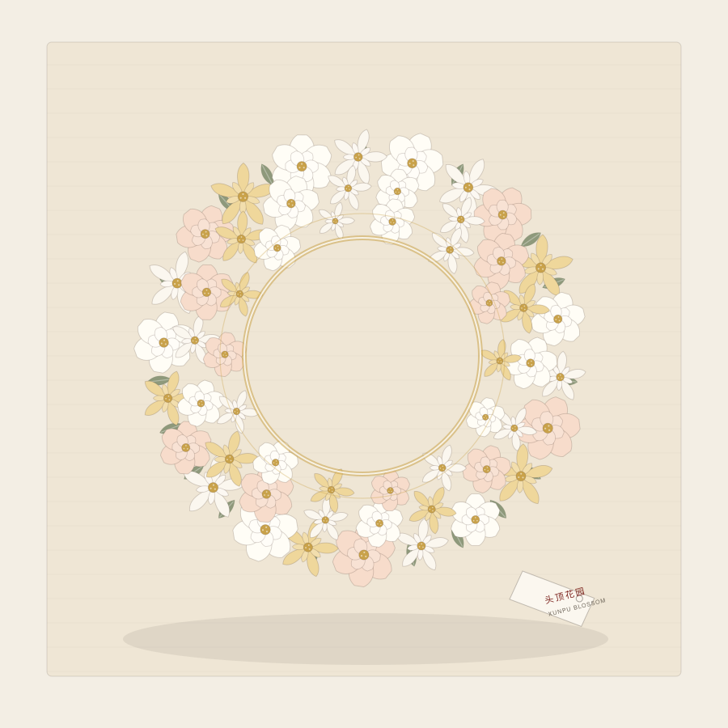
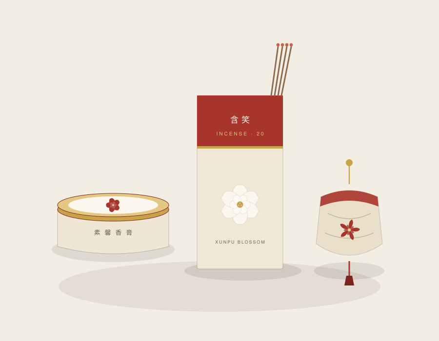
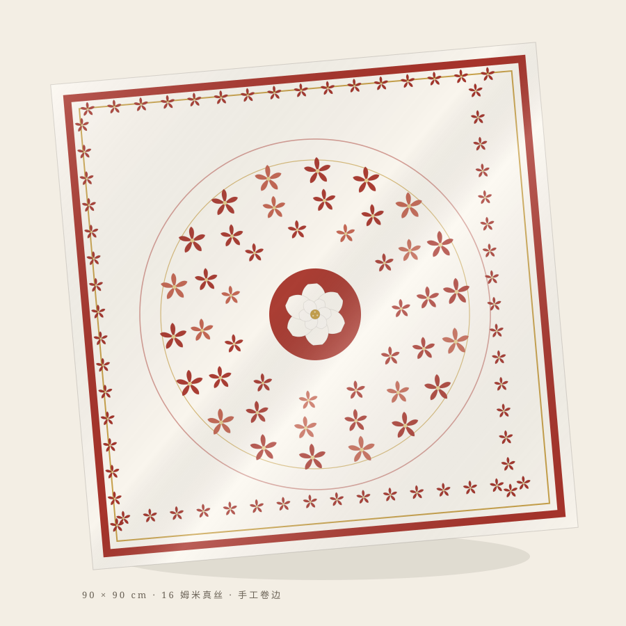
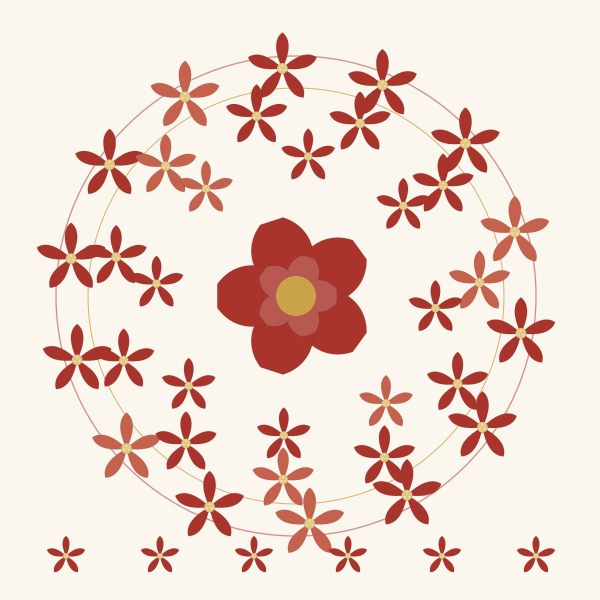
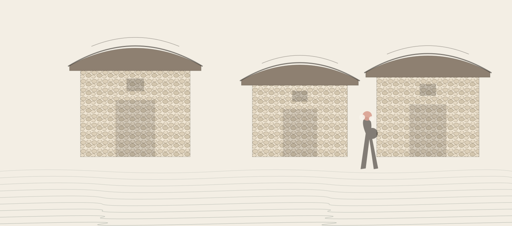

主推

逛累了就歇一会儿。九个小游戏都取自泉州：拼花冠、认花签、找不同，也有簪花、配花、方巾纹样，还有南音节拍、花灯点灯与德化瓷拉坯。不用注册，成绩留在花间榜上；通关还能领一张 ¥5 券。
九宫格被打乱，点两块交换位置。用最少的步数，把花冠拼回原样。
还没有人上榜，来做第一个十六张花签背面朝上，八种花色各两张。记住位置，两两配齐。
还没有人上榜，来做第一个甲乙两园藏着三处不同：一朵变色、一朵消失、一朵变小。找出全部。
还没有人上榜，来做第一个照花单把素馨、茉莉、含笑簪上发髻，复原一顶蟳埔女的头顶花园。
还没有人上榜，来做第一个花市清晨，照单配齐八束花。点错、点多都记一次出错。
还没有人上榜，来做第一个半城红方巾被切乱旋转，点一块转 90°，把纹样转回原样。
还没有人上榜，来做第一个工尺谱化作拍板，跟着金色拍线点准每一记工尺，奏完四句。
还没有人上榜，来做第一个六盏泉州花灯依次亮起，记住顺序再点回去，三巡点完。
还没有人上榜，来做第一个看准火候区定坯，五次成器，拉出一只德化白瓷瓶。
还没有人上榜，来做第一个ORIGIN
在泉州湾的入海口，有一座村子把春天戴在头上。渔家女盘发为髻，以鲜花串成环，一圈一圈围戴上去——这便是簪花围，人们叫它「头顶的花园」。
花会谢，海风会吹散。我们想做的，是替这份转瞬即逝的日常，找一个可以留存的容器。
刺桐港帆樯如林。素馨与茉莉随商舶上岸，在泉州落户生根。相传「素馨」之名，来自一位波斯女子。
海蛎壳垒墙、红砖压脊，蟳埔的巷子由此有了海的样子。「千年砖，万年蚵」，说的就是这份耐得住海风的硬气。
大裾衫、宽筒裤、丁香耳坠与簪花围，一同被列入第二批国家级非物质文化遗产名录。
旅人排队来戴一顶花。簪花围从渔家日常，变成了泉州最生动的一张城市名片。




取簪花围的俯视结构：发髻为心，花环层层向外。三层同心圆是它的骨架，五瓣花是它的最小单位。母题可放大为方巾主图，也可缩小为标签、印章与包装压纹。

六件产品全部落在泉州本地可触达的工艺上：绢花与缠花在丰泽区的手工坊，骨瓷走德化的窑口，真丝方巾借石狮的织造与印花产能，包装用再生纸与亚麻布。
「头上戴的不是花，
是一整座城对日子的讲究。」
—— 蟳埔花事 · 品牌手记
| 赛道 | 赛道一 · 城市礼物 |
|---|---|
| 主题 | 花韵文化主题（泉州本土花 · 蟳埔簪花围） |
| 作品 | 蟳埔花事 · 泉州城市礼物六件套 |
| 组别 | 设计组 |
| 提交 | 报名表 · 作品 PDF · 承诺书 · 源文件（分层可编辑） |